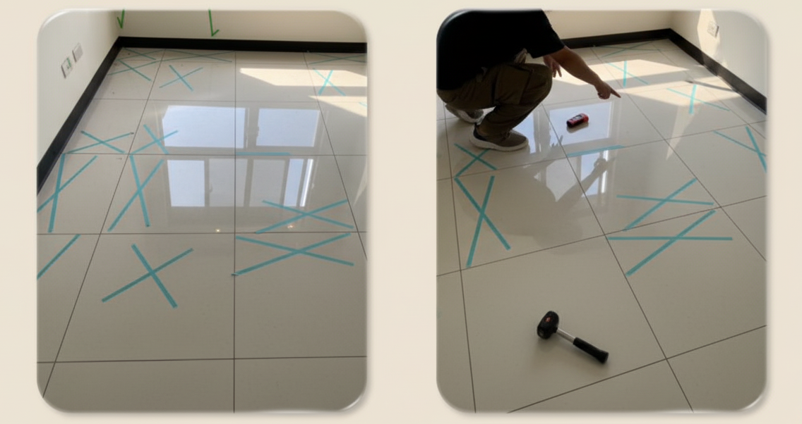
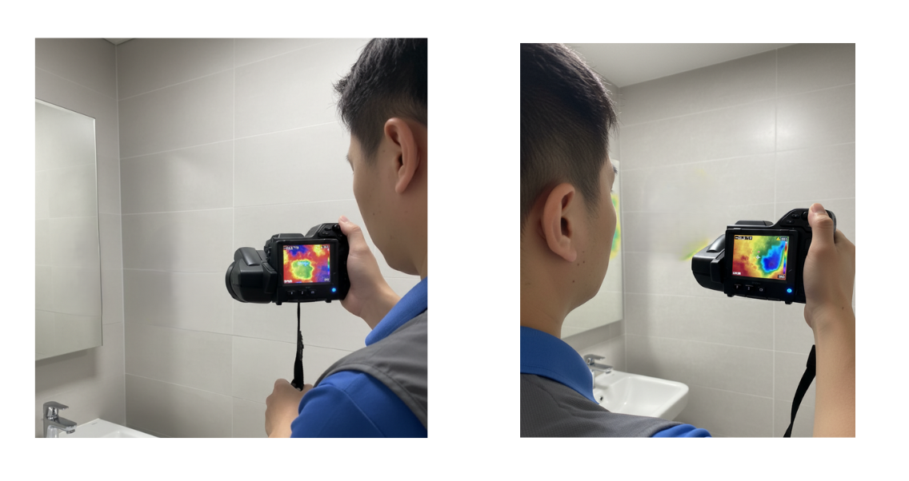
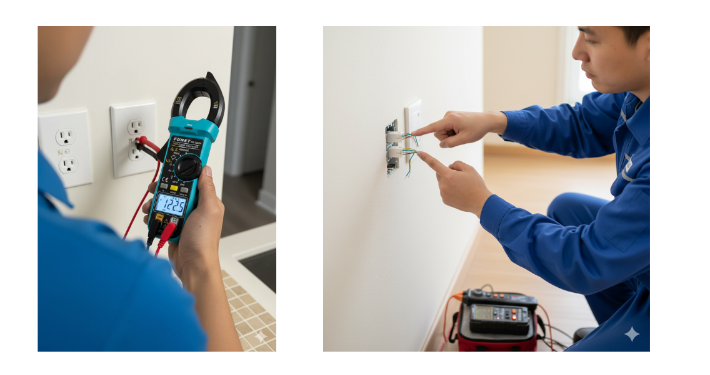

【案例一】新北板橋｜陳先生夫婦｜首購族的安心委託
- 地點：新北市板橋區
- 屋況：新成屋，權狀35坪
- 主要問題：客廳及玄關大面積地磚空心、浴室洩水坡度不足
陳先生夫婦是標準的首購族，對於第一次買房既興奮又焦慮。他們在網路上做了很多功課，深知「地磚空心」是新成屋常見卻又棘手的問題。在我們的檢測中，透過專業敲擊棒與紅外線熱像儀輔助，發現客廳有超過40%的地磚有空心現象。我們將所有問題點一一標記並生成圖文並茂的數位報告，讓陳先生夫婦能有憑有據地向建商反映。最終建商同意將有問題的地磚全部免費更換，為他們省下了未來可觀的維修費用。
【案例二】桃園青埔｜林小姐｜揪出隱藏的浴室漏水危機
- 地點：桃園市中壢區（青埔）
- 屋況：新成屋，權狀28坪
- 主要問題：主臥浴室牆內冷水管輕微滲漏、窗框崁縫不實
林小姐是位忙碌的上班族，希望交屋過程能越簡單越好。初看屋況時，表面上幾乎完美無瑕。但在我們使用高精度熱像儀進行全屋掃描時，發現主臥浴室的牆面有異常的低溫區域，這是肉眼完全無法察覺的。經過進一步儀器檢測，判斷是牆內水管有輕微滲漏。這個「隱形殺手」若未及時發現，未來不僅會造成壁癌，更可能影響到樓下鄰居。林小姐慶幸地表示，幸好有我們的科技驗屋服務，才能在裝潢前就徹底解決這個大問題。
【案例三】台北內湖｜王先生家庭｜守護孩子的用電安全
- 地點：台北市內湖區
- 屋況：新成屋，權狀45坪
- 主要問題：廚房部分插座迴路缺少地線、書房網路孔線路接觸不良
王先生一家準備迎接新成員，對於居家用電安全特別重視。在驗屋過程中，我們使用專業的驗電器檢測全屋所有插座，發現廚房電器高功率區有兩個插座竟缺少地線，這在潮濕環境下可能會有觸電風險。此外，給孩子規劃的書房網路孔也無法正常使用。我們將這些看似微小但攸關安全與便利性的問題，詳細記錄於報告中。建商在收到報告後，也立即派員前來修正，確保了王先生一家未來居住的安全與品質。